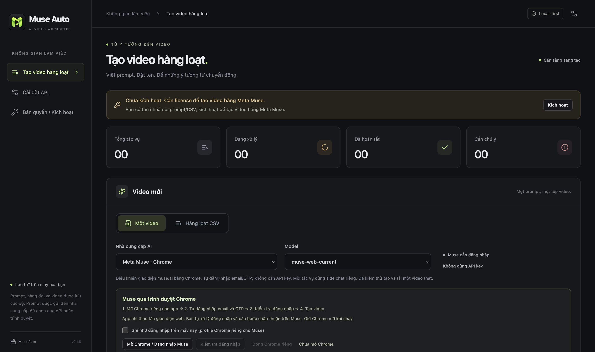

Chuẩn bị một lần
Viết từng prompt hoặc nhập CSV với hai cột filename,prompt. Xem trước danh sách trước khi thêm.
DÀNH CHO NHỮNG Ý TƯỞNG CẦN THÀNH HÌNH
Chuẩn bị prompt, đặt tên tệp, chọn thư mục. Muse Auto thay bạn theo dõi hàng đợi và lưu từng video về đúng nơi.
AI Video Batch Generator · Desktop cho macOS & Windows
Bộ cài mới nhất cho macOS và Windows tại mục Tải ứng dụng.

Prompt → Hàng đợi → Video trên máy bạn.
KHÔNG PHẢI TRÌNH BIÊN TẬP VIDEO01 / QUY TRÌNH
Viết từng prompt hoặc nhập CSV với hai cột filename,prompt. Xem trước danh sách trước khi thêm.
Dùng Muse qua Chrome, đăng nhập tài khoản của bạn và chọn nơi lưu. Bạn tự chi trả tài khoản và credit theo nền tảng AI.
Theo dõi trạng thái, tạm dừng gửi mới và tải video đúng tên. Tác vụ đã gửi vẫn tiếp tục khi bạn tạm dừng.
DỮ LIỆU CỦA BẠN
Hàng đợi, tên tệp và video được lưu cục bộ. Prompt được gửi đến nhà cung cấp AI bạn chọn; đây không phải công cụ tạo video hoàn toàn ngoại tuyến.
KẾT NỐI HIỆN TẠI
Kết nối hiện mở trong ứng dụng: muse.ai qua Chrome, đăng nhập thủ công. Gemini và Flow đang tắt trong bộ chọn. Đây là điều khiển giao diện web, có thể thay đổi hoặc ngừng hoạt động khi dịch vụ bên thứ ba thay đổi.
02 / LICENSE
Trải nghiệm
Bắt đầu với quy trình tạo video của bạn.
Giá cơ sở: 299.000đ cho 1 tháng.
Không tự động gia hạn
Chọn gói 1 tháng ↗Liên hệ email để thanh toánSử dụng ngắn hạn
Phù hợp cho một đợt sản xuất nội dung.
Tiết kiệm 33,2% so với mua 3 lần gói 1 tháng (897.000đ).
Không tự động gia hạn
Chọn gói 3 tháng ↗Liên hệ email để thanh toánTiết kiệm
Thêm 100.000đ so với gói 3 tháng để dùng 6 tháng.
Tiết kiệm 61,0% so với mua 6 lần gói 1 tháng (1.794.000đ).
Không tự động gia hạn
Chọn gói 6 tháng ↗Liên hệ email để thanh toánĐề xuất
Thêm 300.000đ so với gói 6 tháng để có license không hết hạn.
Giá bằng khoảng 3,34 lần gói 1 tháng (999.000đ ÷ 299.000đ).
Không tự động gia hạn
Chọn gói vĩnh viễn ↗Liên hệ email để thanh toánPhần trăm tiết kiệm được tính theo tổng phí mua các gói 1 tháng tương ứng và làm tròn đến một chữ số thập phân. So sánh gói vĩnh viễn chỉ dựa trên phí phần mềm; quyền cập nhật và hỗ trợ vẫn là 12 tháng kể từ kích hoạt.
Thêm 100.000đ từ gói 3 tháng để dùng 6 tháng. Thêm 300.000đ từ gói 6 tháng để có license không hết hạn.
Các gói cùng tính năng, khác thời hạn sử dụng. Thanh toán một lần cho mỗi lần mua, không tự động gia hạn. Không có phí kích hoạt hoặc subscription voice bổ sung.
Giá trên là phí sử dụng phần mềm, không bao gồm tài khoản hoặc credit của nền tảng AI.
Quyền sử dụng, cập nhật và hỗ trợ trong thời hạn gói. Tháng theo lịch, có xử lý ngày cuối tháng, bắt đầu từ lần kích hoạt đầu tiên. Gia hạn cộng từ ngày hết hạn nếu còn hiệu lực; nếu đã hết hạn tính từ lúc gia hạn.
License không hết hạn cho phiên bản được cấp quyền, kèm 12 tháng cập nhật và hỗ trợ. Các tính năng kết nối online phụ thuộc dịch vụ bên thứ ba.
Sau 12 tháng tiếp tục dùng phiên bản thuộc quyền của bạn. Mua thêm cập nhật là tùy chọn; chưa công bố giá. Không tự cập nhật sang phiên bản ngoài quyền sử dụng.
Một máy hoạt động tại một thời điểm. Hủy kích hoạt để chuyển máy; máy hỏng/cài lại hệ điều hành: liên hệ hỗ trợ xác minh và phục hồi, không phải mua lại. License mới có grace tối đa 7 ngày khi server tạm lỗi. Hết hạn không xóa video/dự án và vẫn mở được thư mục.
03 / TẢI ỨNG DỤNG
Tải bộ cài mới nhất trực tiếp từ GitHub Releases, không cần đăng nhập GitHub. Chọn đúng hệ điều hành và kiến trúc máy.
Apple Silicon & Intel
Bản chưa có Developer ID / notarizationmacOS 12.5 trở lên. Bản hiện tại ký ad-hoc; macOS có thể hiển thị cảnh báo bảo mật. Muse qua Chrome cần Chrome tương thích; khuyến nghị macOS 13 trở lên.
x64 · Installer .exe
Bản chưa ký chứng chỉ nhà phát hànhDành cho Windows x64. Windows có thể hiển thị cảnh báo bảo mật vì bộ cài chưa có chứng chỉ nhà phát hành. Cần cài Google Chrome riêng để dùng Muse.
Phiên bản và ghi chú phát hành ↗ · SHA-256 bộ cài ↗
Các nút tải tự trỏ đến bản Latest khi CI phát hành thành công. Người dùng app không cần cài Node.js, Git hay công cụ lập trình. Repo phân phối công khai chỉ chứa bộ cài và tài liệu.
04 / CÀI ĐẶT VÀ KÍCH HOẠT
05 / CẦN BIẾT
Không. Bạn tự trả tài khoản/API/credit. Không hứa video không giới hạn, bảo đảm viral, kiếm tiền, duyệt nền tảng hoặc đồng nhất nhân vật/giọng tuyệt đối.
Không. 12 tháng là quyền cập nhật và hỗ trợ. Bạn tiếp tục dùng phiên bản thuộc quyền; mua thêm cập nhật là tùy chọn. Kết nối online có thể thay đổi hoặc ngừng hoạt động do bên thứ ba.
Một máy hoạt động tại một thời điểm. Với license mới, hủy kích hoạt khi còn truy cập máy cũ rồi kích hoạt máy mới. Nếu máy hỏng hoặc cài lại hệ điều hành làm đổi mã, gửi email hỗ trợ kèm mã đơn từ email mua để xác minh và giải phóng máy cũ, không phải mua lại. License cũ liên hệ người bán để cấp lại.
Không. License mới đã xác thực có grace tối đa 7 ngày, không vượt hạn sử dụng gói tháng. Thu hồi license có căn cứ khác với mất kết nối. Dự án/video không bị xóa; vẫn mở thư mục và truy cập file đã tạo.
Liên hệ charlie.nguyen.forwork@gmail.com để được hướng dẫn và cấp mã đơn. Chỉ xác nhận thanh toán sau đối soát thực tế, không dựa riêng vào ảnh chuyển khoản. Giữ mã đơn/mã tra cứu; nếu quên, gửi email mua để hỗ trợ xác minh và gửi lại thông tin license.
Chính sách quyền riêng tư, điều khoản và hoàn tiền đang chờ chủ sản phẩm duyệt. Xác nhận bằng văn bản trước khi thanh toán; chưa có cam kết hoàn tiền tự động. Server license chỉ cần email đơn mua, mã thiết bị đã băm theo phạm vi app, thời điểm và giao dịch; không thu prompt/video hoặc fingerprint mở rộng.
MÔ PHỎNG SỐ HỌC · KHÔNG PHẢI DỰ BÁO BÁN HÀNG
Tổng thu giả định: 76.400.000đ
299.000 × khách 1 tháng + 599.000 × khách 3 tháng + 699.000 × khách 6 tháng + 999.000 × khách vĩnh viễn.
Không phải doanh thu kế toán hoặc lợi nhuận; chưa trừ hoàn tiền, thuế hay chi phí. Các tỷ lệ chỉ là giả định.
BẮT ĐẦU BẰNG MỘT LÔ NHỎ